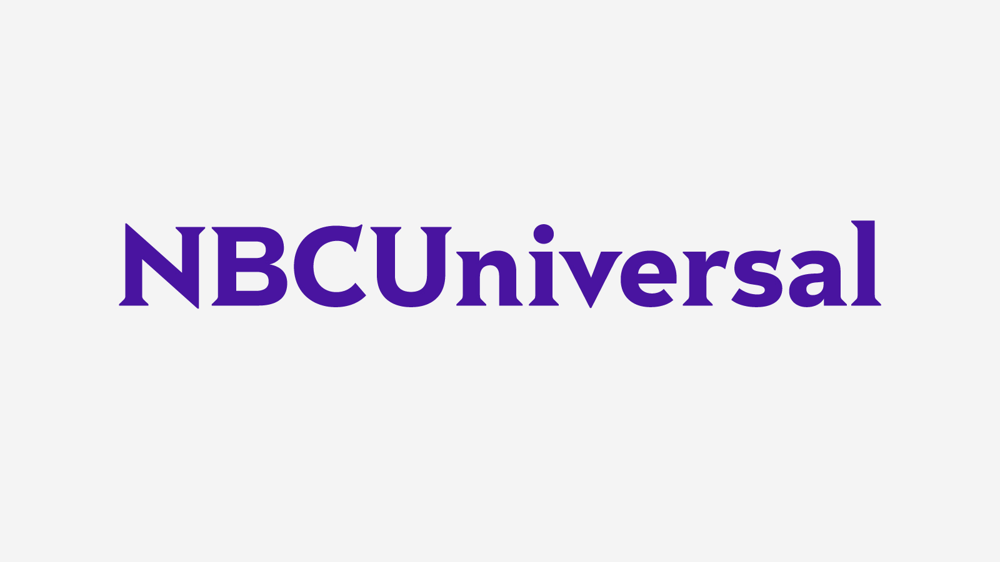
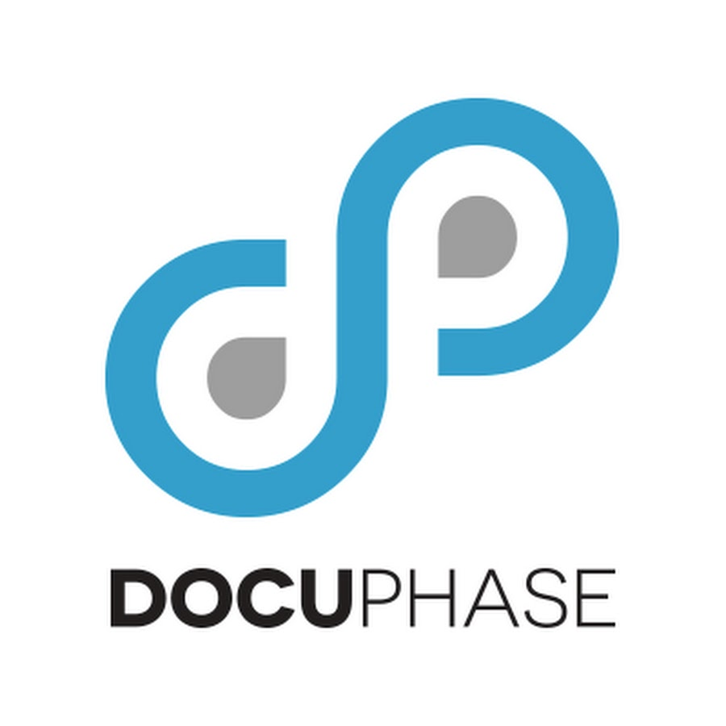

AI Program Manager · Technical Delivery Leader · Consultant
Stephen Robinson
Lead Technical Program Manager bridging enterprise delivery and applied AI — I turn technical complexity into measurable business outcomes.
At NBCUniversal I lead a team of project managers driving a $1.26M infrastructure modernization program projected to save $4M+ this year. A decade delivering cloud, infrastructure, and security programs across Fortune 500 media — plus consulting, AI tooling, and an M.S. in AI in progress.
Download Resume
Core Strengths
What I bring to every engagement
Enterprise Program Leadership
End-to-end delivery of multi-million-dollar technology programs — currently leading a team of PMs on a $1.26M initiative projected to save $4M+, with a track record of 100% on-time execution.
Cloud, Infrastructure & Cyber Compliance
Modernizing servers and platforms, retiring tech debt, and closing cyber-security gaps across AWS, Azure, and GCP environments at enterprise scale.
Applied AI & Automation
Translating emerging AI/ML capabilities into executable business solutions with measurable ROI — from workflow automation to AI decision-support systems I build and run myself.
Stakeholder & Vendor Management
Translating technical complexity into executive-ready communication. Aligning 20+ cross-functional engineering, cyber, and operations teams, vendors, and business units toward shared goals.
Experience
Career journey
Engineering Project Manager, Technology PMO

NBCUniversal- Lead the enterprise Infrastructure Software Upgrade Program — a $1.26M initiative retiring tech debt and bringing servers and platforms into cyber-security compliance, projected to save $4M+ this year — directing a team of project managers
- Deliver a $1M+ portfolio of infrastructure, cloud, and security programs (network vacates, platform upgrades, cloud migrations, ServiceNow workflows, BeyondTrust rollouts), coordinating 20+ engineering, cyber, and operations teams with 100% on-time execution
- Lead the multi-year Evertz Mediator Release Management program — 3–5 releases annually across 50–100 regression test cycles — cutting deployment defects 25–35% YoY through improved planning and QA alignment
- Govern 30+ simultaneous workstreams with structured RAID practices, improving risk visibility and mitigation speed ~40% and enabling data-driven decisions for senior leadership
Technical Business Systems Analyst
NBCUniversal
- Managed server operations and application lifecycle for Universal Brand Development, sustaining 24/7 availability across global business units
- Partnered with Engineering, Operations, and Technology teams to streamline workflows, reduce system issues, and improve release reliability across the application suite
- Owned the Universal Brand Development annual financial plan — CAPEX/OPEX pacing, forecasting, and budget alignment across multiple technology initiatives
Process Improvement Consultant

DocuPhase- Architected and deployed custom DocuPhase workflow automation across accounts payable, procurement, and document management — reducing manual processing time and improving operational efficiency
- Built client-facing workflow interfaces in HTML, CSS, and JavaScript, translating business requirements into intuitive software
- Engineered backend database solutions with advanced SQL for data integration, custom reporting, and workflow logic
Business Analyst
Fairfax Software
- Delivered end-to-end Quick Modules imaging solutions across healthcare, financial services, and government clients — requirements gathering through production deployment
- Traveled nationwide to run business-process analysis and stakeholder workshops, identifying automation opportunities that streamlined document workflows
- Configured custom document-management systems with rigorous QA testing and comprehensive user training
Data Migration Intern
Fairfax Software
- Migrated large datasets from legacy database systems via ETL (mapping, extraction, transformation, loading), ensuring integrity and alignment with business requirements
- Diagnosed and resolved errors across Microsoft SQL Server R2 environments with senior DBAs, and documented migration procedures for repeatability and audit readiness
Projects
What I'm building
JARVIS
A personal AI executive assistant and life command center — integrating email, calendar, finances, and project management into a single intelligent layer across 6+ data sources.
Robinson Consulting Group
Professional services, consulting, and educational material bridging the gap between technology and people.
Retro Snake Game
A retro snake game built for iOS, bringing the classic arcade experience to modern mobile devices.
Daily Anchor
A couple's and relationship building app designed to strengthen connections through daily intentional engagement.
LevelUP Game
A motivational word puzzle game that challenges players to level up their vocabulary and mindset.
Beyond the Résumé
What drives me outside of work
AI & Emerging Tech
I'm genuinely obsessed with how AI is reshaping work and life. Beyond reading about it, I'm building it — JARVIS, my personal AI operating system, started as a side project and became a daily necessity.
Entrepreneurship
I can't not build things. Robinson Consulting Group, Robinson Business Ventures, iOS apps, AI tools — I'm always in build mode. If there's a problem worth solving, I'd rather create the solution than wait for one.
Lifelong Learning
PMP, CSM, CompTIA Cloud+, and a former AWS Solutions Architect — and now a Master's in AI at Penn State. My bookshelf and my transcript tell the same story: the learning never stops, and that's exactly the point.
Building Real Products
There's something uniquely satisfying about shipping software that people actually use. From retro games to relationship apps to AI assistants, I love the full arc from idea to product in the hands of real users.
About
From hands-on engineering to program leadership
I'm a Lead Technical Program Manager at NBCUniversal with 10 years of enterprise delivery experience, bridging program execution and applied AI. Today I lead a team of project managers on high-stakes infrastructure, cloud, and security programs — bringing structure to ambiguity and turning technical complexity into measurable business outcomes.
I started my career writing code, migrating databases, and troubleshooting infrastructure. That technical foundation is what makes me different as a program leader. I don't just manage timelines — I understand the systems, the trade-offs, and the technical decisions behind them.
Over the past decade I've worked across the full spectrum of enterprise technology: cloud and infrastructure modernization at NBCUniversal, process-automation consulting at DocuPhase, and custom solution delivery at Fairfax Software. Now I focus on leading large-scale technology programs, implementing AI-driven solutions, and helping organizations turn technical complexity into competitive advantage — both inside the enterprise and through independent consulting.
Credentials
Education & professional development
M.S. in Artificial Intelligence
Penn State University
Advanced study in applied AI, machine learning, and intelligent systems
B.S. Information Technology
University of South Florida, 2017
College of Engineering — server management & deployment, software development, and database design
Project Management Professional (PMP)
Project Management Institute
Industry-standard certification for leading and directing projects and teams
Certified ScrumMaster (CSM)
Scrum Alliance
Certified in Agile/Scrum methodology for iterative project delivery
CompTIA Cloud+
CompTIA
Validated expertise in cloud infrastructure deployment, maintenance, and optimization
AWS Solutions Architect – Associate
Amazon Web Services
Designed scalable, fault-tolerant distributed systems on AWS
Tools & Platforms
Technologies I work with
Cloud & Infrastructure
Program Management
Data & Analytics
Development
AI & Automation
Get in Touch
Let's discuss your next technology initiative
Whether you're hiring a senior technical program manager, exploring AI implementation for your organization, or need consulting support for a complex technology initiative, I'd welcome the conversation.